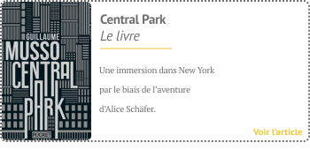
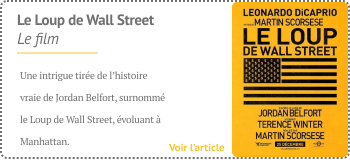
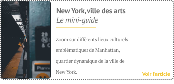

LE LIVRE AUGMENTÉ


Découvrez New York à travers Central Park, le livre bouleversant et imprévisible de Guillaume Musso. Faites également preuve d'intérêt pour Le Loup de Wall Street, de Martin Scorsese, se déroulant en partie à Manhattan. Allez même plus loin en voyageant au coeur même de certains lieux culturels de Manhattan…


